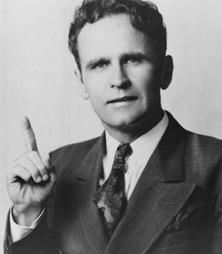

Pépites
01. Romains
Romains 8:19
Aussi la création attend-elle avec un ardent désir la révélation des fils de Dieu.
02. J'espère et j'ai confiance
63-0317M_Dieu se cache, puis se révèle dans la simplicité: 429
...J’espère et j'ai confiance que ce Message produira ce qu’Il était destiné à produire,...
03. La vision que nous avons aujourd'hui
65-0718M_Rendre un service à Dieu en dehors de sa volonté:150
Eh bien, regardons à la vision que nous avons aujourd'hui. Est-ce construire des églises? Est-ce de nouvelles choses? Est-ce que ce sont de grandes choses qui vont arriver, ou est-ce le jugement?...
04. Les saints jugeront la terre...prendre le contrôle
63-0318_Le Prémier Sceau: 115-116
Ne savez-vous pas que les saints jugeront la terre?» Voyez? Voilà. Les saints vont juger la terre et en prendre le contrôle. C’est vrai. Vous dites: «Comment donc un petit groupe comme celui-là...?» Je ne sais pas comment cela va se faire. Mais Il a dit que cela va se faire, alors, pour autant que je sache, ça règle la question.
05. Le combat s'annonce chaud et acharné
63-0321_Le Quatrième Sceau: 312
Maintenant, dans Apocalypse 19, il n’y a pas seulement lui qui se prépare, mais Christ aussi se prépare à l’affronter. Le combat s’annonce chaud et acharné.
Christ, dans Apocalypse 19... Christ rassemble les Siens; pas des quatre coins de la terre, parce qu’il n’y aura qu’un tout petit reste. Qu’est-ce qu’Il fait? Il les rassemble des quatre coins du Ciel. Demain soir, on va prendre «les âmes sous l’autel», et vous allez voir si c’est vrai ou pas. Des quatre coins du Ciel; sur un cheval blanc comme neige!
06. Pourchassé et persécuté
Exposé des Sept Âges de l'Église: page 352
Cet Âge de Laodicée se termine par une disparition complète de la Parole, ce qui oblige le Seigneur à se retirer. Il est à l'extérieur, d'où Il appelle les Siens, ceux qui Le suivent en obéissant à la Parole. Après une manifestation puissante de l'Esprit pendant un court moment, ce petit groupe pourchassé et persécuté ira rejoindre Jésus.
07. Ils vont à sa rencontre...leur choix à eux
63-0321_Le Quatrième Sceau :315
Ceux qui sont avec Lui montent des chevaux blancs aussi, et ils sont appelés «les élus avant la fondation du monde». Amen! Et ils sont fidèles à la Parole. Amen! Fiou! J’aime cette appellation: «Elus, avant la fondation du monde», et ensuite fidèles à la Parole, par leur propre choix, remplis de la stimulation du vin nouveau et de l’Huile, et ils continuent leur chevauchée, ils vont à Sa rencontre. Evidemment, ils savent que les Tonnerres ne vont pas tarder à dévoiler la chose. Voyez?
08. Reprendre le pouvoir
60-0522E_L'Adoption: 76
Et il a perdu sa position de dieu, il a perdu sa position de fils, il a perdu son empire, et Satan a pris le pouvoir. Mais, frère, nous attendons les manifestations des fils de Dieu, qui vont revenir, reprendre le pouvoir. Nous attendons la plénitude du temps, quand la pyramide arrivera à son sommet, quand les fils de Dieu seront pleinement manifestés, quand la puissance de Dieu ira de l’avant (alléluia) et retirera à Satan tous les pouvoirs qu’il a. Oui monsieur, c’est à lui.
09. Attendez que les sept Tonnerres fassent entendre
Quatrième Sceau: 180
Attendez que ces Sept Tonnerres fassent entendre leurs voix à ce groupe qui est vraiment capable de prendre la Parole de Dieu et La manier, là. Elle va trancher et couper. Et ils peuvent fermer les cieux. Ils peuvent fermer ceci, ou faire cela, tout ce qu’ils veulent. Gloire! Il sera tué par la Parole qui sort de la bouche de Dieu, qui est plus tranchante qu’une épée à deux tranchants. Ils pourraient faire apparaître cent milliards de tonnes de mouches s’ils le voulaient. Amen. Tout ce qu’ils vont dire va arriver, parce que c’est la Parole de Dieu, qui sort de la bouche de Dieu. Amen. Toujours, Dieu... C’est Sa Parole, mais Il utilise toujours l’homme pour La faire agir.
10. Réveil de l'épouse
Troisième Sceau: 183
La–l’Epouse n’a pas encore eu de réveil. Voyez? Il n’y a encore eu aucun réveil là, aucune manifestation de Dieu pour éveiller l’Epouse. Voyez? C’est ce que nous attendons. Il faudra ces Sept Tonnerres inconnus là-bas pour La réveiller de nouveau. Il les enverra. Il l’a promis.
11. Besoin de savoir ce qu'on dit les sept Tonnerres
Exposé des Sept Âges de l'Église: page 316
Et quand les sept tonnerres eurent fait entendre leurs voix, j’allais écrire; et j’entendis du ciel une voix qui disait : Scelle ce qu’ont dit les sept tonnerres, et ne lécris pas.” Personne ne sait ce qu’il y avait dans ces tonnerres.
Pourtant, nous avons besoin de le savoir. Et il faudra que ce soit un prophéte qui en recoive la révélation, parce que Dieu n’a aucun autre moyen d’apporter Ses révélations de l’Ecriture que par un prophéte.
12. Quand et comment exécuter
La brèche entre les sept âges de l'église et les sept Sceaux: 141
Ça, c’est décrit dans ce Livre scellé de Sept Sceaux dont nous sommes en train de parler maintenant. Très bien. Le Livre de la Rédemption, tout ça, c’est décrit ici. Tout ce que Christ fera à la fin nous sera révélé cette semaine, dans les Sept Sceaux, si Dieu nous le permet. Voyez? Très bien. Ce sera révélé. Et révélé, à mesure que les Sceaux seront brisés et nous serons appelés, alors nous pourrons voir ce qu’est ce grand plan de la rédemption, quand et comment il sera exécuté.
Tout cela est caché dans ce Livre de mystère, ici. C’est scellé, fermé par Sept Sceaux... Et l’Agneau est donc le Seul qui puisse les briser.
13. J'ai attendu avec impatience
Livre Adoption #5: page 170
Comment allez-vous faire pour y arriver? Tenez-vous tranquilles! Dieu veut placer Son Eglise, les fils et les filles de Dieu. O Dieu, donne-moi de vivre assez longtemps pour le voir, c’est ma prière. C’est tellement proche, que je pourrais presque le toucher de mes mains, on dirait. C’est tout près. C’est ce que j’ai attendu avec impatience, j’attends de voir le moment où on marchera dans la rue, et voyant un homme étendu là, infirme de naissance: “Je n’ai ni argent, ni or.” Oh, attendant les manifestations des fils de Dieu, alléluia, quand Dieu Se fera connaître, quand ils vont enrayer la maladie, qu’ils vont enrayer le cancer, qu’ils vont enrayer les maux.
14. Ne crains point petit troupeau
Exposé des Sept Âges de l'Église: page 61
“Ne crains point, Jean. Ne crains point, petit troupeau. Tout ce que Je suis, vous en êtes héritiers. Tout Mon pouvoir vous appartient. Ma toute-puissance est à vous, alors que Je suis au milieu de vous. Je ne suis pas venu apporter la crainte et l’échec, mais l’amour, le courage et la capacité. Tout pouvoir M’a été donné, et c’est à vous qu’il appartient de l’utiliser. Prononcez la Parole, et Je l’accomplirai. C’est Mon alliance, et elle est infaillible.”
15. La Parole, seul but: la Rédemption
63-0320_Le Troisième Sceau: 107
Nous voyons donc que Dieu a dit à Ève que bien longtemps après «la Parole reviendra à toi». Or, comment est-elle tombée? Je veux que ma classe le dise. D’où est-elle tombée? D’où Ève est-elle tombée? De la Parole. Est-ce juste? [L’assemblée dit: «De la Parole».–N.D.E.] La Parole. Et Dieu a dit qu’Il pourvoirait à un moyen pour la racheter et la ramener de nouveau à la Parole. Très bien. Bien longtemps après, la Parole se ferait connaître à elle. Très bien. La Parole allait donc venir dans un seul but. Maintenant, retenez bien ce que je suis en train de dire. La Parole allait venir à elle dans un seul but, celui de la rédemption.
16. Ce monde réclame sa rédemption
63-0324E_Le Septième Sceau: 43
Notre Père céleste, nous voilà arrivé à ce soir glorieux, cette heure glorieuse où quelque chose de glorieux est arrivé. Cela a environné les gens. Et, Père, je prie que, ce soir, ce soit divulgué, sans l’ombre d’un doute, dans le coeur et la pensée des gens, qu’ils sachent que Dieu est toujours sur le Trône, et qu’Il aime toujours Son peuple, et que c’est l’heure–l’heure que le monde a ardemment désiré voir; maintenant elle est proche, car ce monde réclame sa rédemption.
17. Jamais eu un temps...fils de Dieu manifestés
60-0522E_L'Adoption: 19
Dites-moi, mon frère, dites-moi, ma soeur, quand y a-t-il déjà eu un temps où les fils de Dieu devaient être manifestés, en dehors de maintenant, de ce temps-ci? Quand y a-t-il déjà eu un temps de l'histoire où ils devaient se manifester, au temps de la délivrance de la nature tout entière? La nature, la nature elle-même soupire, elle attend le temps de la manifestation. Eh bien, avant que l'expiation ait été faite, avant que le Saint-Esprit ait été déversé pour la première fois, avant tout le - tout l'Ancien Testament, tout au long des âges, il ne pouvait pas y avoir de manifestations. Il a fallu attendre ce temps-ci. Maintenant, toutes choses ont été amenées, elles arrivent, elles prennent forme vers une pierre principale, vers la manifestation des fils de Dieu, alors qu'ils reviendront, que l'Esprit de Dieu entrera dans ces hommes-là d'une façon si parfaite, que leur ministère sera tellement semblable à celui de Christ, au point de L'unir avec Son Eglise.
18. De tous cotés ils attendent...où sont ces gens?
Livre Adoption #III: page 66
Avec un ardent désir, la création entière attend la manifestation. Vous voyez, la manifestation! La manifestation, qu’est-ce que c’est? C’est de faire connaître! Le monde entier. Les musulmans, là-bas, ils attendent cela. De tous côtés, partout, ils attendent cela. “Où sont ces gens?”
19. Dispensation de l'adoption
Livre Adoption #IV: page 138-139
Croyez-vous aux dispensations? La Bible le dit: “Dans la dispensation [version anglaise du roi Jacques_N.D.T.] de la plénitude du temps.” La plénitude du temps, qu’est-ce que c’est? Il y a eu la dispensation de, eh bien, il y a eu la dispensation de la loi mosaïque. Il y a eu la dispensation de_de_de Jean-Baptiste. Il y a eu la dispensation de Christ. Il y a eu la dispensation de l’organisation des églises. Il y a eu la dispensation de l’effusion du Saint-Esprit. Maintenant il y a la dispensation de l’adoption, ce que le monde attend, ce après quoi il soupire. “Et lorsque les temps seront accomplis, dans la dispensation de la plénitude du temps.” Cette plénitude du temps, qu’est-ce que c’est? C’est quand les morts ressuscitent, quand la maladie cesse, quand la quand toute la terre cesse de soupirer. “La plénitude de la dispensation du temps.”
20. Accomplir à travers l'Épouse
Exposé des Sept Âges de l'Église: page 164-165
Comme Il n’a pas terminé Son oeuvre entière lors de Son ministère terrestre, Il agit maintenant dans l’épouse et à travers elle. Elle le sait, car à l’époque, il n’était pas encore temps pour Lui de faire certaines choses qu’Il doit faire maintenant. Mais maintenant, Il va accomplir à travers l’épouse l’oeuvre qu’Il avait réservée pour ce moment précis.
21. La Parole est dans l'Épouse
Exposé des Sept Âges de l'Église: page 164
En effet, si la semence est mise en terre, l’eau la ramènera à la vie. En voici le secret. La Parole est dans l’épouse (comme elle était en Marie). L’épouse a la pensée de Christ, car elle sait ce qu’Il veut qu’on fasse de Sa Parole. Elle exécute en Son nom ce que la Parole ordonne, car elle a l’“ainsi dit le Seigneur”.
22. Adam a perdu les droits
La brèche entre les sept âges de l'église et les Sept Sceaux : 124-125
Et qui était innocent? Tout homme était né par un acte sexuel, par le sexe, tous. Et le seul qui ne l’était pas avait perdu les droits à la Vie Eternelle et le droit d’être roi sur la terre.
Oh! quand je pense à ce passage de l’Ecriture: «Car Tu nous as rachetés pour Dieu, et ainsi nous régnerons et serons rois et sacrificateurs sur la terre»! Oh! la la! Que... Le Parent Rédempteur... Oh! quelle belle histoire on pourrait raconter ici!
23. Ses sujets rachetés
Prémier Sceau: 159-160
Mais Il a dit: «Si Mon Royaume était de ce monde, Mes sujets auraient combattu pour Moi. Mon Royaume est en Haut.» Mais Il a dit: «Quand vous priez, priez comme ceci: ‘Que Ton Royaume vienne. Que Ta volonté soit faite sur la terre comme au Ciel.’» Amen. Oui. Combien ceci est glorieux!
Il a quitté le Trône du Père pour prendre Son propre Trône... Maintenant Il a cessé Son oeuvre d’intercession, Il s’est avancé pour réclamer Son propre Trône, Ses sujets rachetés. C’est pour faire cela qu’Il s’est avancé du Trône.
24. Avoir l'oeil perçant de l'aigle
Quatrième Sceau: 151
Lorsque vous montez là-haut, il vous faut avoir l’oeil perçant de l’aigle, pour voir ce qui vient et pour savoir ce qu’il faut faire. Or, c’est l’âge de l’aigle qui a révélé Cela. Maintenant, nous voyons que cet âge de l’aigle a été promis dans Apocalypse 10.7 et dans–et dans Malachie 1.4, que c’est dans les derniers jours, (Voyez-vous? c’est exact), qu’il serait là.
25. Donnez à Dieu des hommes vaillants
63-0318_Le Prémier Sceau: 383
Laissez-moi vous dire quelque chose, mon pauvre ami aveugle. Ce n’est pas par l’argent que le monde est gagné, mais par le Sang de Jésus-Christ. Donnez à Dieu des hommes, des hommes vaillants qui vont s’en tenir à cette Parole, qu’ils vivent ou qu’ils meurent; c’est ça qui va vaincre. Les seuls qui pourront vaincre, ce sont ceux dont les noms ont été écrits dans le Livre de Vie de l’Agneau dès la fondation du monde. Ce sont les seuls qui L’écouteront. L’argent n’aura rien à faire avec cela; il les enfoncera encore plus dans les traditions de leurs dénominations.
26. La force terrestre
62-0318E_La Parole parlée est la semence originelle #2: 375
Où se trouvera le gouvernement, sur quoi ? Sur les épaules, sur Son Corps. « Le gouvernement sur Ses épaules », c’est une partie du Corps. Qu’est-ce ? Sa force terrestre. La force terrestre de Dieu, c’est Sa Parole faite chair dans Son Corps ici sur terre, par lequel Elle s’accomplit.
27. Quelque part dans ce monde
58-1228_Pourquoi La Petite Bethléhem: 135
Seigneur Dieu, d’un petit groupe des gens qui sont lavés par le cordon de fil cramoisi du Sang du Seigneur Jésus, Tu feras sortir de nouveau Christ à travers ce groupe, Seigneur, quelque part dans ce monde, et Il paîtra toutes les nations avec une verge de fer.
28. Dieu et la création attendent
60-0522E_L'adoption: 36
Regardez ce qu’il y a eu entre les deux, l’âge de Wesley. Et ce qu’il y a eu après, c’est l’âge pentecôtiste. L’âge pentecôtiste, avec la restitution des dons, des dons spirituels. Maintenant, regardez cet âge qui arrive maintenant, tout en haut, à la Pierre principale. Vous voyez ce que je veux dire? La Venue du Seigneur, où c’est manifesté. Dieu et toute la création attendent que l’église trouve sa position, sa place.
29. C'est la conduite qui met en position
60-0522M_La position en Christ: 72
Maintenant, donner la place d’un fils. D’abord, après que le fils était arrivé, alors il était un fils, mais ensuite, nous avons vu que c’est sa conduite qui le mettait en position d’être adopté, c’est-à-dire s’il se conduisait comme il faut ou pas.
30. Réunir toutes choses: attendre la manifestation des fils
60-0522M_La position en Christ: 169
Mais pour ce qui est de réunir toutes choses, à la fin de la dispensation, pour ça, il faudra attendre la manifestation des fils de Dieu, dans cette dispensa-alors qu’Il réunira tout,tous ceux qui auront été amenés en Christ.
31. Le mystère de sa volonté
60-0522E_L'adoption: 18
Je me suis mis à passer d’une référence Biblique à l’autre, et je songeais: “Le mystère, comme c’est mystérieux! Et les Ecritures m’ont amené dans l’Ancien Testament, ensuite elles m’ont ramené dans le Nouveau Testament; l’enchaînement se faisait, pour voir le mystère de Sa Venue, le mystère de Sa volonté, le mystère d’être assis ensemble. Souvenez-vous, on ne peut pas l’enseigner dans aucun séminaire. C’est un mystère. Vous ne pouvez pas le connaître par des études, par la théologie. C’est un mystère qui a été caché depuis la fondation du monde, en attendant la manifestation des fils de Dieu.
32. Nous sommes au seuil/parole endossée
60-0522E_L'adoption: 80
Retournez à la Genèse, à l’original, qu’en est-il? Maintenant le monde et la nature soupirent, gémissent, tout est en état d’agitation. Comment ça? Pour que les fils de Dieu soient manifestés, quand les véritables fils, les fils nés, les fils remplis, parlent et que leur parole est endossée. Je crois que nous sommes au seuil de cela en ce moment. Oui monsieur. Dire à cette montagne, et qu’il en soit ainsi.
33. Rien n'est caché à l'Église qui hérite de la terre
59-0301M_Étroite est la porte: 70
Oh! ce matin nous avons le droit, Église, de connaître les secrets de la Venue du Seigneur, car le... Heureux ceux qui procurent la paix, ils seront appelés fils de Dieu! Heureux ceux qui ont faim et soif, ils seront rassasiés. Heureux ceux qui ont le coeur pur, car ils verront Dieu. Heureux les débonnaires, car ils hériteront la terre.» Si donc l’Eglise du Dieu vivant doit hériter la terre, aucun secret ne lui est caché.
34. Cacherai-je à Abraham-héritier du monde
58-0618_Écriture sur la muraille: 30
Et Abraham avait cent ans, et Sara, quatre-vingt-dix à ce moment-là. Et Sara était derrière l’Ange, c’est ce que déclare la Bible. Elle était dans la tente, et la tente était derrière l’Ange, et l’Ange a dit: «Cacherai-Je à Abraham ce qui va arriver, étant donné qu’il est l’héritier du monde ?» Et Il a dit: «Je te visiterai, à cette même époque (les vingt-huit jours de Sara), et vous allez avoir cet enfant que vous avez attendu.»
35. Homme agent de Dieu
Quatrième Sceau: 180-181
Toujours, Dieu... C’est Sa Parole, mais Il utilise toujours l’homme pour La faire agir.
Dieu aurait pu ordonner que les mouches apparaissent en Egypte, mais Il a dit: «Moïse, c’est ton travail. Je vais juste te dire quoi faire, et va le faire.» Il l’a pleinement accompli. Voyez? Il–Il aurait pu choisir de les faire apparaître par le soleil, Il aurait pu faire que ce soit la lune qui les fasse apparaître, ou que le vent le fasse, mais Il–Il a dit: «Moïse...» Cela–cela... Il choisit les hommes. Très bien.
-
50-0227_Dieu dans son peuple: 23
Dieu ne descend pas sur les dénominations. Dieu ne descend pas sur les appareils mécaniques. Dieu, le Saint-Esprit, descend sur les hommes. L'homme est l'agent de Dieu, et la chose la plus difficile que Dieu ait jamais eu à faire, c'était d'amener un mortel à croire un autre. Croyez-vous cela?
36. Se fera en dehors des mouvements organisés
Exposé des Sept Âges de l'Église: page 225
Dieu a agi en dehors des groupes pentecôtistes, en dehors des mouvements organisés, et ce qu’Il fera à l’avenir se fera également en dehors des mouvements organisés. Dieu ne peut pas se servir des morts pour agir. Il ne peut agir que par les membres VIVANTS. Ces membres vivants sont hors de Babylone.
37. Ce que ce dernier Message serait
Troisième Sceau: 197
...Dieu lui a promis par Jean le révélateur, par tous ces prophètes, exactement ce que ce dernier Message serait.
...Vous voyez, exactement ce qui arriverait maintenant! Et, pour l’église, qu’est-ce que C’est? La Parole incarnée faite de nouveau chair au milieu de Son peuple, vous voyez, et ils ne Le croient tout simplement pas.
38. Un homme qui se respecte
La brèche entre les sept âges de l'église et les sept Sceaux: 109
Tout homme qui se respecte se battrait pour défendre les droits qu’il a reçus de Dieu.
39. C'est comme la démocratie
Cinquième Sceau: 171
C’est exactement comme la démocratie, on trouve qu’elle est bonne. Je le crois aussi, mais ça ne marchera jamais comme il faut. Ça ne peut pas. Avec cette bande de Ricky qui en assume la direction. Comment donc parviendrez-vous à faire marcher ça parfaitement? Impossible. Remarquez, la seule chose convenable, c’était d’avoir un roi ayant la crainte de Dieu.
40. Ce qu'il nous faut au capitole
Livre Adoption #I: page 12
Ce qu’il nous faut, ici, au Capitole des États-Unis, comme Président, ce qu’il nous faut au Congrès, ce qu’il nous faut dans nos tribunaux, ce sont des hommes qui ont consacré leur vie à Dieu, qui sont remplis du Saint-Esprit et qui sont conduits par Sa direction Divine.
41. Le caractère est une victoire
Exposé des Sept Âges de l'Église: page 112
Il faut souffrir pour pouvoir régner. La raison en est qu’on ne peut tout simplement pas former un caractère sans souffrance. Le caractère est une VICTOIRE, pas un don. Un homme qui n’a pas le caractère ne peut pas régner, car la puissance sans le caractère, c’est satanique. Mais la puissance avec le caractère est apte à régner. Et, puisqu’Il veut que nous partagions même Son trône, tout comme Lui a vaincu et s’est assis sur le trône de Son Père, alors, nous aussi, nous devons vaincre pour nous asseoir avec Lui.
42. Catégories spéciale de gens
Exposé des Sept Âges de l'Église: page 16
Vous vous en souvenez, j'ai dit au début de ce message que ce Livre que nous étudions est en fait la révélation de Jésus Lui-même dans l’Église et de Son œuvre dans les âges à venir.
J’ai ensuite mentionné que le Saint-Esprit doit nous donner la révélation, sans quoi nous ne pouvons pas la recevoir. Ces deux pensées réunies, vous pouvez voir que l’étude ordinaire et la simple réflexion ne suffiront pas à faire de ce Livre une réalité. Il faudra pour cela l’œuvre du Saint-Esprit. Ceci pour dire que ce Livre ne peut être révélé qu’à une catégorie spéciale de gens. Il faudra pour cela quelqu’un qui a la faculté du discernement prophétique. Cela nécessitera une capacité d’écouter Dieu parler. Cela nécessitera un enseignement surnaturel, pas seulement d’étudier en comparant un verset à l’autre, bien que ce soit une bonne chose. Mais un mystère nécessite l’enseignement de l’Esprit, sans quoi il ne sera jamais clair.
43. Gouvernement-dimension humaine
Exposé des Sept Âges de l'Église: page 116-117
Il était réellement Dieu. Mais un jour, ils ont regardé autour d’eux, et ils ont vu les Philistins et d’autres nations qui étaient gouvernées par des rois. Cela a attiré leur attention, et ils ont décidé qu’il fallait qu’ils donnent une dimension humaine à leur gouvernement, alors ils ont voulu avoir un roi. Or, Dieu allait Lui-même donner cette dimension humaine à leur gouvernement par la-Personne du Seigreur Jésus-Christ, mais ils L’ont devancé. Satan connaissait le plan de Dieu, c’est pourquoi il a mis dans le cœur des gens le désir de devancer Dieu (la Parole).
44. Messager Mal.4/Apo.10 va faire 2 choses
Exposé des Sept Âges de l'Église: page 319-320
Or, ce messager de Malachie 4 et d’Apocalypse 10.7 va faire deux choses.
Premièrement : selon Malachie 4, il ramènera les cœurs des enfants aux pères.
Deuxièmement : il révélera les mystères des sept tonnerres d’Apocalypse 10, qui sont les révélations contenues dans les sept sceaux. Ce seront ces “vérités-mystères” Divinement révélées qui ramèneront littéralement les cœurs des enfants aux pères de la Pentecôte. Exactement.
45. Le jour du Seigneur
Exposé des Sept Âges de l'Église: page 46
Ce n’est certainement pas aujourd’hui le Jour du Seigneur. Aujourd’hui, c’est le jour de l'homme. Ce sont les actions des hommes, les œuvres des hommes, l’Église des hommes, le culte selon les idées des hommes, tout est de l’homme, car c’est le monde de l’homme (le kosmos). MAIS LE JOUR DU SEIGNEUR ARRIVE. Oui, assurément. Simplement, au moment de la Révélation de Jésus-Christ, Jean a été ravi par l’Esprit et transporté par l’Esprit jusqu’à ce Grand Jour à venir. Le Jour du Seigneur, ce sera quand les jours des hommes seront terminés. Les royaumes de ce monde deviendront alors les royaumes de notre Dieu. Le Jour du Seigneur, c’est quand les jugements s’abattront, après quoi viendra le millénium.
46. Ce prophète en son propre nom
Exposé des Sept Âges de l'Église: page 356
Aux jours du septième messager, aux jours de l’Age de Laodicée, ce messager révélera les mystères de Dieu, comme ils ont été révélés à Paul. Il parlera, et ceux qui recevront ce prophète en son propre nom recevront les effets bénéfiques du ministère de ce prophète. Et ceux qui l’écouteront seront bénis, et ils feront partie de cette épouse du dernier jour, ceux dont il est dit dans Apocalypse 22.17 : “L'Esprit et l’épouse disent : Viens.” Le grain de blé (le Blé-Épouse) qui était tombé en terre à Nicée est redevenu le Blé-Parole de l’origine. Que Dieu soit loué à jamais. Oui, écoutez le prophète de Dieu, authentifié par Dieu, qui vient dans ce dernier âge. Ce qu’il dit de la part de Dieu, l’épouse le dira aussi. L'Esprit, le prophète et l’épouse diront tous la même chose. Et ce qu’ils diront aura déjà été dit dans la Parole.
47. Fin de la fonction de sacrificateur
Exposé des Sept Âges de l'Église: page 50-51
C’est le Jour du Seigneur; en effet, Jean Le voit, non comme sacrificateur, mais comme le Juge qui vient. Il ne porte plus la ceinture d’or autour de la taille, comme le fait le sacrificateur qui sert Dieu dans le Lieu très saint, mais Il la porte maintenant autour des épaules, car Il est à présent le JUGE, et non plus le sacrificateur. Jean 5.22 est maintenant accompli : “Le Père ne juge personne, mais Il a remis tout jugement au Fils.” Son service est accompli. La fonction de sacrificateur a pris fin. Les jours de la prophétie sont accomplis. Il est ceint comme JUGE.
48. Privilège de s'assoir sur le trône
Exposé des Sept Âges de l'Église: page 352
Par conséquent, personne ne s’assiéra sur le trône du Seigneur Jésus-Christ sans avoir vécu cette Parole. Toutes vos prières, tous vos jeûnes, toutes vos repentances, — quoi que vous apportiez à Dieu, — rien de tout cela ne vous donnera le privilège de vous asseoir sur ce trône. Ce ne sera accordé qu’à l’Épouse-PAROLE. Comme la reine partage le trône du roi, parce qu’elle est unie à lui, de même les seuls qui partageront le trône seront ceux qui sont de cette Parole, comme Il est, Lui, de cette Parole.
49. Message court et rapide
65-0815_Et tu ne le sais pas: 49
Je suis seulement en train de construire. L'heure est proche où vous allez voir quelque chose arriver, où il va arriver quelque chose. Et toute cette toile de fond, ici n'a fait que poser le fondement d'un Message court et rapide qui ébranlera toute la nation.
50. Qui a fait la volonté de Dieu ou pas
Exposé des Sept Âges de l'Église: page 57
Voilà. Quand Il viendra, cette Parole s’élèvera contre toutes les nations et tous les hommes. Aucun ne pourra s’opposer à elle. Elle révélera ce qu’il y a dans chaque coeur, comme II l’a fait pour Nathanaël. La Parole de Dieu montrera qui a fait la volonté de Dieu et qui ne l’a pas faite. Elle révélera les actions secrètes de chaque homme et la raison pour laquelle il les a faites.
51. Ce monde réclame sa rédemption
63-0324E_Le Septième Sceau: 43
Notre Pére céleste, nous voila arrivé a ce soir glorieux, cette heure glorieuse ou quelque chose de glorieux est arrivé. Cela a environné les gens. Et, Père, je prie que, ce soir, ce soit divulgué, sans l’ombre d’un doute, dans le coeur et la pensée des gens, qu’ils sachent que Dieu est toujours sur le Trône, et qu’ll aime toujours Son peuple, et que c’est l’heure—l’heure que le monde a ardemment désiré voir; maintenant elle est proche, car ce monde réclame sa rédemption.
52. L'Homme, maître de la nature
61-0618_Apocalypse chapitre Cinq #2: 96, 98
96 La nature sait cela. La nature soupire et nous soupirons avec elle. La nature attend la manifestation des fils de Dieu, parce que la nature fut maudite avec son maître. Quand son maître fut maudit, lui qui était le plus élevé, alors, la nature tomba avec le maître. Mais quand ce Parent Rédempteur est venu (Alléluia!), Il a racheté l'homme qui est le maître de la nature; donc toute la nature attend le principal maître.
-
98 Toute la nature attend son maître. Le maître, ce sont les fils de Dieu à qui cette terre a été donnée. Maintenant, Dieu aura bien sûr Ses cieux; mais ceci fut donné aux hommes. Et le Parent Rédempteur est venu nous ramener à ce que nous avions perdu. Comme c'est beau! Oh! la la! Je pense que c'est... un Agneau Rédempteur...
53. Lucifer-royaume plus grand
63-0731_Il y a une seule voie à laquelle Dieu a pourvue pour tout: 57
57 Si vous avez bien remarqué, Lucifer fait aujourd’hui exactement la même chose qu’il avait faite au commencement. Voyez? Lucifer, au commencement, voulait se bâtir un royaume plus grand et plus beau que celui de Micaël, Christ.
C’étaient ses ambitions, d’accomplir quelque chose comme cela. Et avec quoi s’est-il mis à faire cela? Il a pris les anges déchus qui avaient perdu leur position initiale. Ce sont eux qu’il a pris pour faire cela.
-
60-0626_Les Réalités Infaillibles Du Dieu Vivant: 230
230 Rappelez-vous, le péché n'a pas commencé sur la terre. Le péché a commencé au Ciel, quand Lucifer a été pris et s'est fait... Il a dit: "Je veux une dénomination, faire une très grande chose", et il s'en est allé au pays du septentrion et il a établi un royaume plus grand que celui de Michaël. Et il a été chassé du Ciel.
54. Les enfants de Caïn envahissent le pays de Noé
58-0928E_La Semence du serpent: 194, 196
194 La semence du serpent arrive, et qu’est-ce qu’elle produit? Maintenant, prenons les premières années. Maintenant, observez ce qui va se passer là. Nous allons le lire directement, parce que je viens de le vérifier. La semence du serpent a produit Caïn. Caïn est allé dans le pays de Nod, a produit des géants, et ensuite ils sont allés dans le pays de Noé.
-
196 Suivons-les un peu plus loin. Ensuite, on les a jusqu’à l’arche, où tout a été détruit. C’était devenu un tel amoncellement de péché, et ils ont pris le pouvoir, et les plus habiles et les intelligents. Au point que, quand Dieu a regardé d’en-haut, il n’en restait plus beaucoup, alors Il a simplement fait entrer Noé et sa famille dans l’arche, Il a fait tomber la pluie et Il a tout détruit. Avant, Il avait enlevé Enoch. Pas vrai [L’assemblée dit: «Amen.» – N.D.E.] Il y avait là toute la semence, presque toute la semence; mais Son dessein devait encore s’accomplir.
55. Quelque chose ne va pas dans les églises
63-0321_Le Quatrième Sceau: 34-35
34 Or, s’il a pu en être ainsi sous cela, le sang des taureaux, qu’en est-il du Sang de Jésus? Il ne les a pas couverts, mais pardonnés complètement. Et vous vous tenez dans la Présence de Dieu, comme fils racheté. Maintenant, vous voyez, l’Eglise vit loin en deçà de sa position. Et je pense que, trop souvent, nous tâtonnons, au lieu de nous avancer vraiment pour affronter la question. Il y a quelque chose que je veux dire, et je–je vais le dire quand le moment sera venu.
35 Et maintenant, remarquez, quelque chose ne va pas quelque part dans les églises. Et je pense que ce sont les systèmes dénominationnels qui ont déformé la pensée des gens et tout, au point qu’ils ne savent pas comment il faut faire. C’est vrai.
56. Il ne veulent pas de la Parole
63-0318_Le Premier Sceau: 309
309 C’est exactement ce qu’il a fait! C’est ce que Daniel a dit que cet antichrist ferait. Il s’adaptera à ce que les gens veulent avoir en place. Oui, ça correspondra à leur—à leur penchant d’aujourd’hui, pour les églises. En effet, dans cet âge de l’église, celui-ci, ils ne veulent pas de la Parole, Christ, mais ils veulent l’église. La première chose qu’ils vous demandent, ce n’est pas si vous êtes Chrétien. “À quelle église appartenez-vous? À quelle église?” Ils ne veulent pas de Christ, la Parole. Allez leur parler de la Parole, et leur dire comment mettre leur vie en ordre, ils ne veulent pas de Cela. Ce qu’ils veulent, c’est vivre comme ça leur chante, tout en appartenant à l’église et en maintenant leur témoignage. Voyez? Voyez? Alors, il répond parfaitement à leur attente. Et, souvenez-vous, ce “il”, il s’est finalement appelé “elle”, dans la Bible, et elle, c’était une prostituée, et elle a eu des filles. Ça répond parfaitement au goût du jour, à ce que les gens veulent. Voilà.
57. Septième Sceau met fin
63-0324E_Le Septième Sceau: 235
235 Il en est ainsi pour le Septième Sceau. Il met simplement fin au temps pour ce monde. Il met fin au temps pour ceci. Il met fin au temps pour cela. Il met fin au temps pour ceci. Il met fin au temps... Absolument tout s’est terminé dans ce Septième Sceau.
58. Ça se passe en trois points
Septième Sceau: 248
248 Et maintenant, aussi sûr que je suis sur l’estrade ce soir, j’ai reçu la révélation qui a révélé que ça se passe en trois points. Et je vais vous parler, avec l’aide de Dieu, d’un point de Cela.
Et alors vous… Voyons cela, d’abord. Voici la révélation, pour entamer ce que je veux vous dire, de quoi il s’agit. Ce qui arrive, c’est que… Ces Sept Tonnerres qu’il a entendus tonner et qu’il lui a été défendu d’écrire, c’est ça le mystère, il repose derrière ces Sept Tonnerres consécutifs qui ont grondé. [Frère Branham donne plusieurs coups sur la chaire. — N.D.É.]
59. Allez chercher l'objet de sa prière
54-0330_Rédemption dans totalité dans la joie: 27
27 Et puis, il y en a beaucoup parmi vous, mes amis, qui prient, qui jeûnent, mais qui ont peur de prendre possession de l’objet de leurs prières. C’est vrai. Voyez? Eh bien, ça ne vous avancera à rien de jeûner et de prier, à moins que vous n’ayez des œuvres qui accompagnent ça. Vous aurez beau avoir toute la foi possible, ça ne vous avancera absolument à rien, à moins de vous avancer jusque-là, de faire face à la chose et de vous en emparer. C’est tout. Vous devez aller de l’avant. Vous devez vraiment faire le pas, et le faire quoi qu’il arrive. Quand vous demandez quelque chose, allez le chercher. Dieu a dit que ça vous appartient, alors n’acceptez rien de moins. Allez chercher ce que vous avez demandé. Faites ça, et voyez le résultat. Oui. Ne—ne reculez pas, en disant :“Eh bien,je vais accepter ça,faute de mieux.”
60. Prières qui bloquent les bénédictions
58-1005E_Un Homme Appelé De Dieu: 33
33 Et, bien des gens prient pour avoir un réveil, je me demande parfois (si ceux qui prient) si ce ne sont pas leurs propres prières qui bloquent les fontaines de bénédictions; du moment qu’ils sont des lâches, et qu’ils ont peur de faire confiance à Dieu, peur de Le prendre au Mot, peur de croire qu’Il vit encore aujourd’hui, pendant que Sa Bible déclare clairement qu’Il est le même hier, aujourd’hui et éternellement.
61. Le Message passera au dessus de la tête
63-0324M_Questions et réponses sur les Sceaux: 202, 216
202 Non, ils sont... Ce sont ceux... Ils... la–la–l’église, les gens qui sont dans les dénominations, qui sont–sont de vrais chrétiens, qui reçoivent le Message... Et ils ne verront jamais cela. Cela ne leur sera jamais prêché. Et ceux qui sont dans des groupes mixtes (à qui cela est prêché), cela leur passera carrément par-dessus la tête, à moins que leur nom soit dans le Livre de Vie de l’Agneau. C’est juste.
-
216 Notre vie devrait être au-dessus des cheveux courts et tout dans cet âge-ci; nous sommes maintenant là dans Quelque Chose, alors que Dieu est en train de révéler les mystères cachés, qui avaient été placés dans le Livre avant la fondation du monde. Et ceux qui ont obéi à ces petites choses, comprendront ce qu’il En est de ces autres choses. Sinon, Cela leur passera par-dessus la tête, autant que l’est est éloigné de l’ouest. Cela va simplement...
62. Jugés par le groupe qui leur a prêché
63-0324M_Questions et réponses sur les Sceaux: 202-203
202 ...
...les gens qui sont dans les dénominations, qui sont–sont de vrais chrétiens, qui reçoivent le Message... Et ils ne verront jamais cela. Cela ne leur sera jamais prêché. Et ceux qui sont dans des groupes mixtes (à qui cela est prêché), cela leur passera carrément par-dessus la tête, à moins que leur nom soit dans le Livre de Vie de l’Agneau. C’est juste.
203 Mais ce seront de gens de bien, et ils ressusciteront et passeront en jugement; ils seront jugés par le groupe même qui leur aura prêché. «Ne savez-vous pas que les saints jugeront la terre?» On leur aura prêché. Vous voyez? Il leur aura prêché par les gens mêmes qui leur auront témoigné du Message selon lequel ils devaient sortir de cela. Voyez? (J’espère que cela explique la chose. J’en ai tellement ici que...).
63. Et ici la Parole était incarnée
63-0323_Le Sixième Sceau: 360-362
360 Remarquez le dernier verset du Sixième Sceau, ouvert. Ceux qui s’étaient moqués de la prédication de la Parole, de la Parole confirmée du Dieu vivant, alors que ces prophètes se tenaient là, accomplissaient des miracles, éteignaient le soleil, et tout le reste, et tout au long de l’âge.... Vous voyez? Ils criaient aux rochers et aux montagnes de les cacher, vous voyez, de les cacher devant la Parole dont ils s’étaient moqués, parce qu’ils Le verront venir. «Cachez-nous devant la colère de l’Agneau.» Il est la Parole. Voyez? Ils se sont moqués de la Parole. Et ici la Parole sera incarnée. Ils L’ont ridiculisée; ils se sont moqués d’eux, ils les ont ridiculisés. Et la Parole incarnée s’était présentée là devant eux!
361 Pourquoi ne s’étaient-ils pas repentis? Ils ne pouvaient pas. C’était trop tard à ce moment-là. Alors, ils savaient que le châtiment... Ils entendent Cela. Ils s’étaient assis à des réunions comme celle-ci, et ils savaient ce qu’il En était. Et ils savaient que ces choses que ces prophètes avaient prédites étaient là devant leurs yeux.
362 La chose qu’ils avaient rejetée... ils avaient dédaigné la miséricorde pour la dernière fois. Et quand on dédaigne la miséricorde, il ne reste plus que le jugement. Quand on dédaigne la miséricorde; pensez-y un peu.